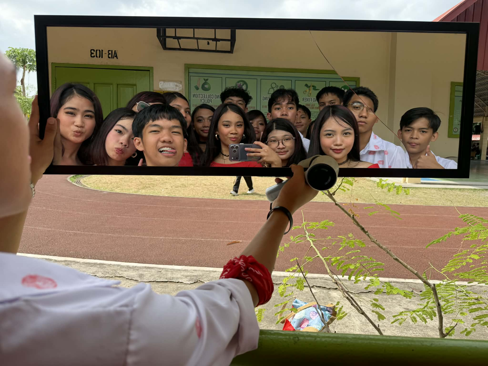
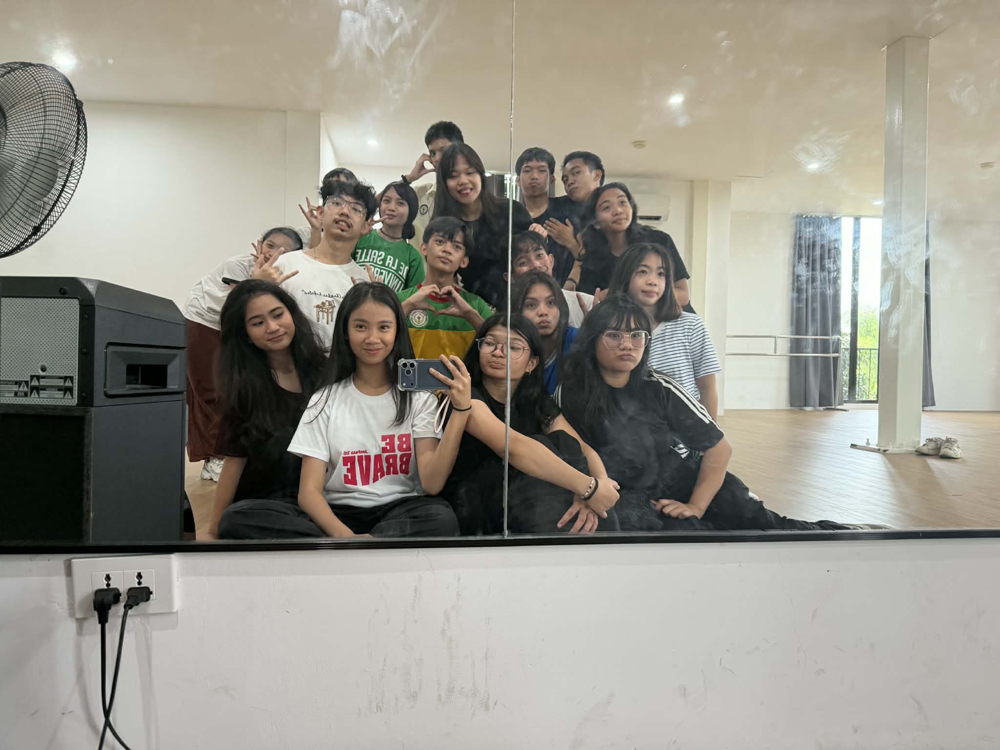

Reflection on Street Dance!
What is the most important thing I learned from the event?
The most important thing I learned from the Street Dance Competition was the importance of teamwork, leadership, and perseverance. As the leader of the group, I realized that creating and teaching choreography requires patience and dedication. This was the hardest hip-hop choreography I have ever made, and it pushed me to challenge both myself and my teammates. Through the experience, I learned that working together and supporting each other helps the whole group improve.
How can I apply what I learned in real-life situations?
I can apply what I learned by becoming more responsible and patient when working with others. Leadership is not only about giving instructions but also about encouraging and guiding people. In real-life situations such as group projects or organizations, teamwork and cooperation are very important. The experience also taught me to stay determined even when tasks become difficult.
Did I actively participate in the event? How?
Yes, I actively participated by serving as the leader of our street dance group. I choreographed the dance routine and taught the steps to the dancers from both Fairness and Fidelity. I also helped guide our practices and made sure everyone was improving with each rehearsal. It was challenging, but seeing the final performance come together made me feel proud of what we accomplished.
If I were to teach this topic or subject to a classmate, how would I explain it?
If I were explaining this to a classmate, I would say that street dance is a style of dance that focuses on rhythm, expression, and teamwork. It involves learning choreography and performing movements that match the music and energy of the performance. Practice and coordination are important so that everyone moves together as one group. Street dance also allows dancers to show creativity and confidence on stage.
Why is it important to have events like this?
Events like the Street Dance Competition are important because they give students the opportunity to express themselves through dance and creativity. They also help students develop teamwork, discipline, and confidence. Activities like this bring students from different sections together and strengthen friendships. It also makes school more exciting and memorable for everyone involved.

